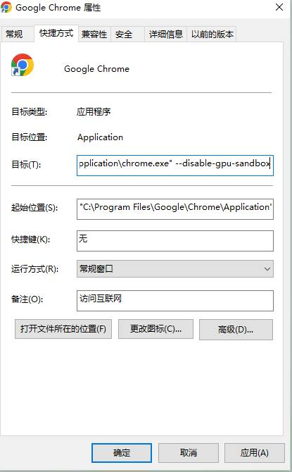

Chrome浏览器在开启了硬件加速功能后,会在另一个进程里(窗口类名是Intermediate D3D Window的进程)中进行渲染操作.
但是默认情况下,这个进程会被沙箱保护,会导致无法绑定.
我们可以通过在启动chrome浏览器时,在快捷方式后面新加参数 --disable-gpu-sandbox 来禁止这个进程被沙箱化.
如图所示

或者你也可以自己用其他任何方式来加参数启动chrome进程.
这样,你就可以绑定这个进程,来进行后台图色了. 一般图色模式是dx.graphic.3d.10plus
但是需要注意的是,这个进程仅能用来后台图色,后台键鼠还是得另一个进程.
所以这里你得用到两个对象,分别绑定不同的进程,然后用其中一个对象来绑定另一个对象的输入.
具体你可以参考SetInputDm这个接口.